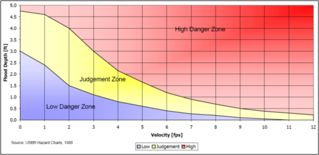

Hazard Maps
Develops hydrodynamic risk maps, highlighting areas with elevated risks based on FLO-2D simulations, aiding in risk management.
Australian Rainfall & Runoff (ARR)

This hazard map is based on the Australian Rainfall & Runoff: A Guide to Flood Estimation (2019).
Flood Hazard Map
\(\qquad\) H1: Generally safe for vehicles, people and buildings
\(\qquad\) H2: Unsafe for small vehicles
\(\qquad\) H3: Unsafe for vehicles, children and the elderly
\(\qquad\) H4: Unsafe for vehicles and people
\(\qquad\) H5: Unsafe for vehicles and people. All buildings
vulnerable to structural damage. Some less robust buildings subject to
failure
\(\qquad\) H6: Unsafe for vehicles and people. All building types
considered vulnerable to failure
Swiss

These hazard maps are based on Vademecum: Hazard maps and related instruments (2005).
Flood Intensity Map
\(\qquad\) HIGH INTENSITY: Depth > 2 m or Depth * Velocity > 2
m²/s
\(\qquad\) MODERATE INTENSITY: 0.5 > Depth > 2 m or 0.5 > Depth *
Velocity > 2 m²/s
\(\qquad\) LOW INTENSITY: Depth < 0.5 m or Depth * Velocity < 0.5
m²/s
Debris Intensity Map
\(\qquad\) HIGH INTENSITY: Depth > 1 m and Velocity > 1 m/s
\(\qquad\) MODERATE INTENSITY: Depth < 1 m or Velocity < 1 m/s
US Bureau of Reclamation
These hazard maps are based on the Downstream Hazard Classification Guidelines (1988).
Houses Hazard Map
\(\qquad\) HIGH DANGER ZONE: Occupants of most houses are in
danger from flood water
\(\qquad\) JUDGMENT ZONE: Danger level is based upon engineering
judgment
\(\qquad\) LOW DANGER ZONE: Occupants of most houses are not
seriously in danger from flood water
Mobile Home Hazard Map
\(\qquad\) HIGH DANGER ZONE: Occupants of almost any size mobile
home are in danger from flood water
\(\qquad\) JUDGMENT ZONE: Danger level is based upon engineering
judgment
\(\qquad\) LOW DANGER ZONE: Occupants of almost any size mobile
home are not seriously in danger from flood water
Vehicle Hazard Map
\(\qquad\) HIGH DANGER ZONE: Occupants of almost any size
passenger vehicle are in danger from flood water
\(\qquad\) JUDGMENT ZONE: Danger level is based upon engineering
judgment
\(\qquad\) LOW DANGER ZONE: Occupants of almost any size passenger
vehicle are not seriously in danger from flood water
Adults Hazard Map
\(\qquad\) HIGH DANGER ZONE: Almost any size adult is in danger
from flood water
\(\qquad\) JUDGMENT ZONE: Danger level is based upon engineering
judgment
\(\qquad\) LOW DANGER ZONE: Almost any size adult is not seriously
threatened by flood water
Children Hazard Map
\(\qquad\) HIGH DANGER ZONE: Almost any size child is in danger
from flood water
\(\qquad\) JUDGMENT ZONE: Danger level is based upon engineering
judgment
\(\qquad\) LOW DANGER ZONE: Almost any size child (excluding
infants) is not seriously threatened by flood water